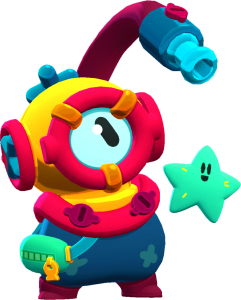

Description
Otis is a damage dealer and also has the rarity of chromatic. Otis looks like a little scuba diver who's attack are,inky art and super, silent seabed.
as the attack and supers names, his attack shoots colorful ink, while his super silence the enemis when hit making them unable to shoot
for a few seconds. He also runs around with his starfish pal Cil.
Otis's attacks
- gadget: Dormant star
- gadget: Phat splatter
- star power: Stencil Glue
- star power: Ink Refills

SKINS